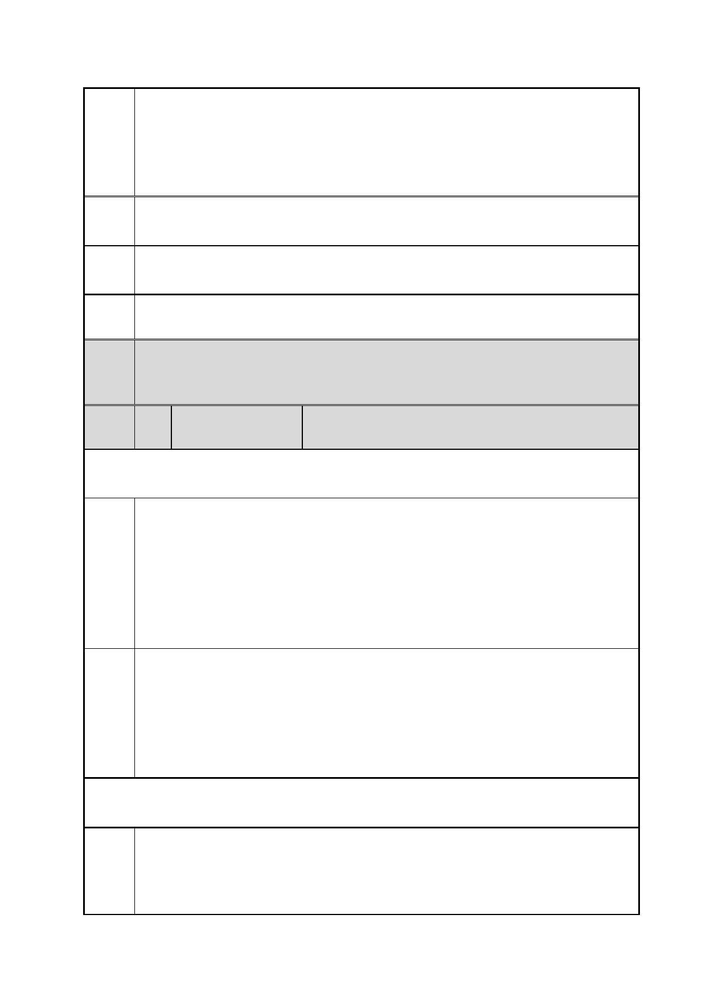

臺北市都市計畫委員會 公民或團體陳情意見綜理表
「變更臺北市信義區逸仙段二小段 33 地號等 21 筆土地（原臺北機廠）
案
名
工業區為創意文化專用區、特定專用區、道路及綠地用地主要計畫案」
及「擬定臺北市信義區逸仙段二小段 33 地號等 21 筆土地（原臺北機
廠）創意文化專用區、特定專用區、道路及綠地用地細部計畫暨劃定
都市更新地區計畫案」
陳情 附近區域交通、環境污染問題未解決，再規劃本案，對本區無異雪上
理由 加霜。
建議 本計畫不分割，暫緩執行。
辦法
市府 有關附近區域交通、環境污染問題之處理，詳如編號 21 市府回應內
回應 容。
委員
會議 內容同編號 1。
決議
編
號
49 陳情人
黃○品
102.12.23 第一次陳情
陳情
理由
建議
辦法
1.因本案為臺北市重要鐵路文化資產之開發計畫，應有完整之規劃及
足夠之公共參與，再行都市化變更，較為妥適。
在文資調查及相關運用計畫尚未成熟之際，草率變更，除蹈大巨蛋之
覆轍，亦有負設計之都理念。
2.本案創意文化專用區內之鐵道文化遺跡，為台灣工業化的重要象
徵，連同松山菸廠，正可見證信義區在城市發展中，地位變化。
3.本次變更綠地規劃不足，且未考量週邊社區生活脈絡。
1.暫緩本案審查，若符合工業區變更，應併送環評規定者，亦請併送
環評。
2.宜優先考量作為活的鐵道博物館，應鼓勵台鐵與文化局合作，開創
古蹟保存及活用之新典範。
3.建議提高綠地面積，並辦理或補在地機構（例：社區大學）辦理公
聽會、工作坊等方式，理解社區脈絡，以提出合理規劃。
103.08.26 第二次陳情
敬請鈞長：回應民眾期望，積極協處，是所至盼。
針對臺北機廠未來發展，我們的訴求：
我們的願望!
1.全區保存臺北機廠，使其成為「活」的鐵道歷史博物館園區！
第 58 頁/共 154 頁